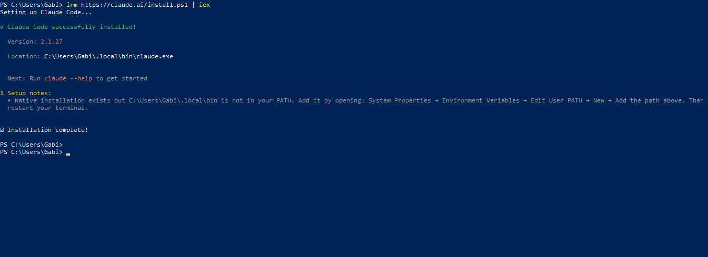
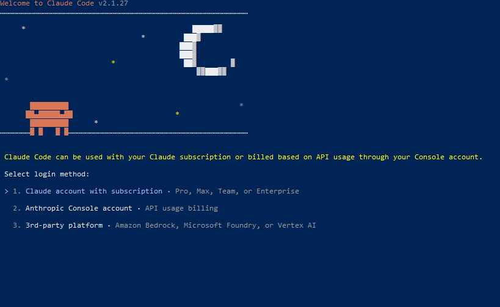
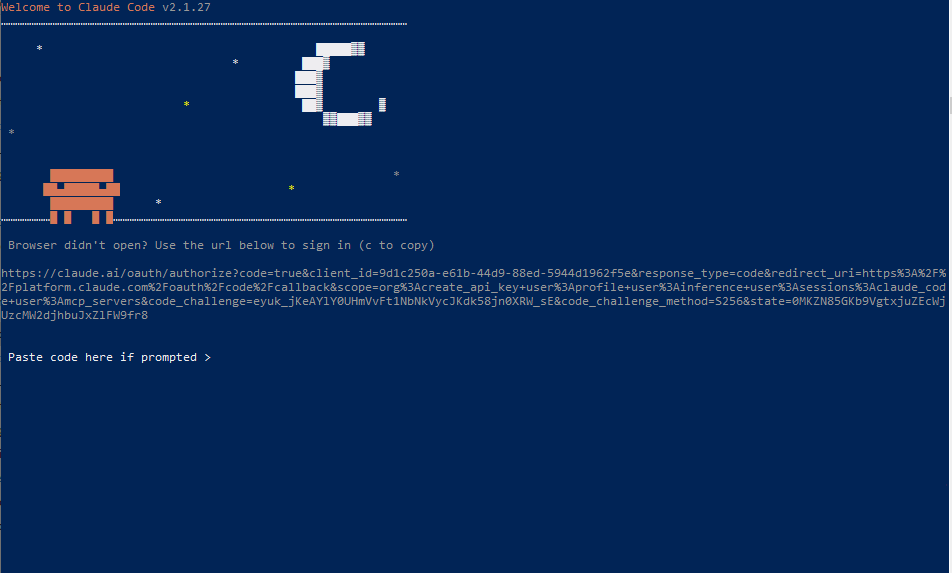

Sigue estos pasos para configurar la interfaz de línea de comandos de Claude en tu sistema Windows.
Abre Windows PowerShell y pega el siguiente comando para iniciar la instalación:
irm https://claude.ai/install.ps1 | iex
El script descargará los archivos. Al finalizar, verás la versión instalada. Si ves un aviso sobre el PATH, deberás realizar el siguiente paso manual.
Para que el comando claude funcione en cualquier carpeta, asegúrate de añadir la ruta \.local\bin a tus variables de entorno de Windows.
Al ejecutar claude por primera vez, elige el estilo visual que prefieras para tu terminal.
Selecciona si usarás tu suscripción de Claude Pro/Team o tu cuenta de Anthropic Console (API).
Copia el enlace proporcionado en tu navegador para autorizar la conexión entre la terminal y tu cuenta de Anthropic.
Después de autorizar en el navegador, este te mostrará un código de verificación. Copia ese código y pégalo en la terminal de PowerShell para completar la autenticación.
¡Listo! La terminal confirmará tu correo electrónico y ya puedes empezar a trabajar.

/help dentro de Claude Code para ver todos los comandos disponibles.